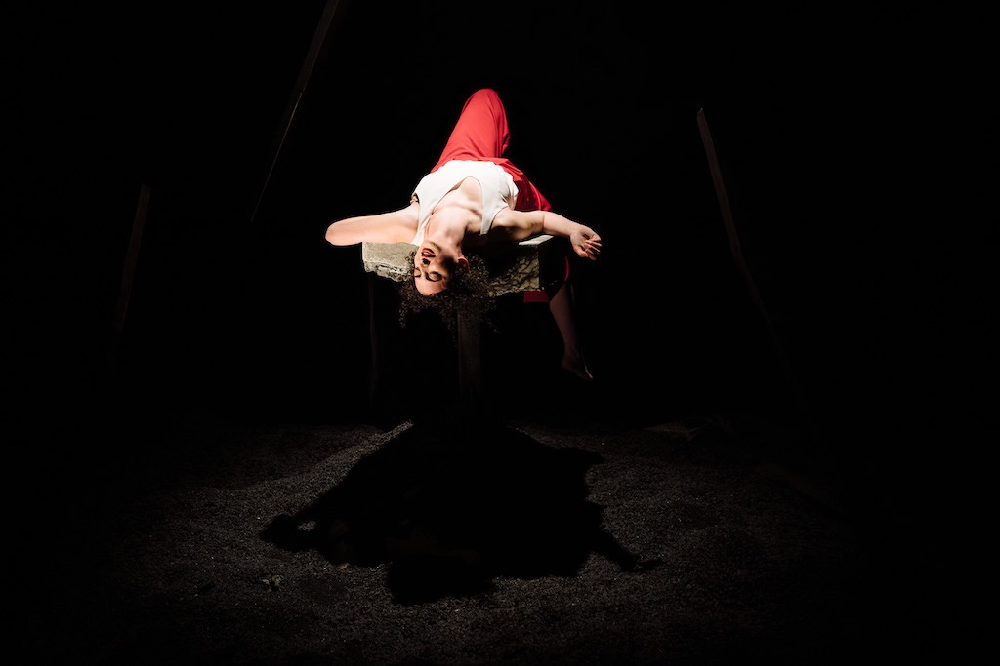
Collapsible
By Margaret Perry. VAULT Festival / Edinburgh Fringe / Abbey Theatre (Dublin Fringe) / Bush Theatre.
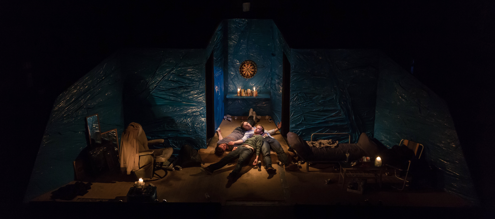
I direct acclaimed productions of new plays by exceptional British and Irish writers, as well as working with young people and community groups on ambitious, multidisciplinary shows.
My work has toured internationally and won multiple awards, including two Stage Edinburgh Awards. I trained on the National Theatre Director's Course, and am a JMK Finalist.

By Margaret Perry. VAULT Festival / Edinburgh Fringe / Abbey Theatre (Dublin Fringe) / Bush Theatre.
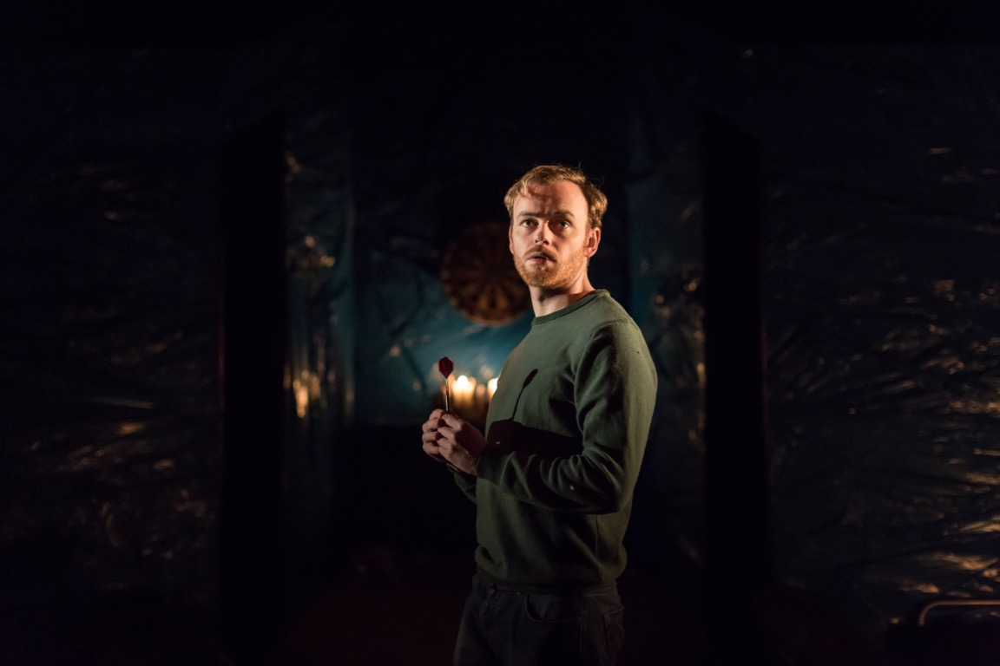
By John O'Donovan. Glor / Project Arts Centre / Clapham Omnibus.
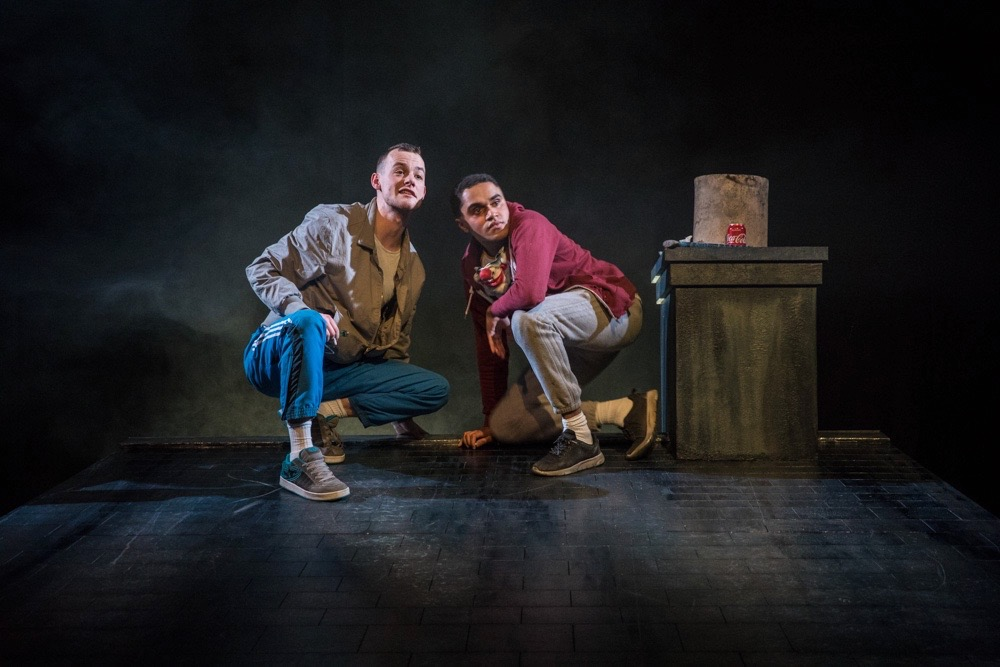
By John O'Donovan. Old Red Lion / Project Arts Centre / Glor / Mick Lally Theatre / VAULT Festival.
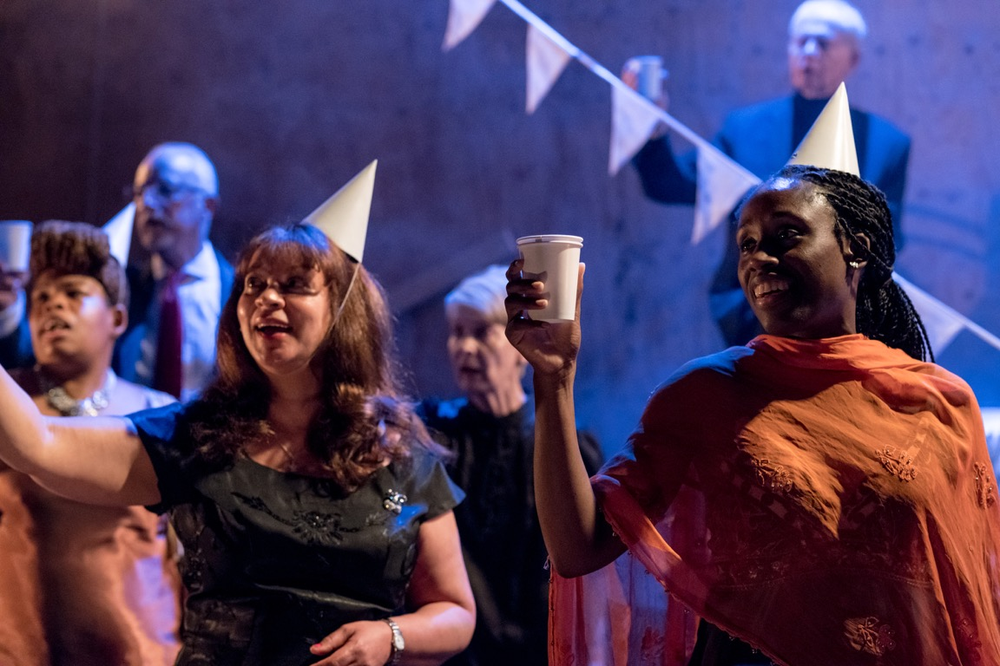
Music by Joseph Atkins. Lyrics by Deanna Rodger. Young Vic Taking Part.
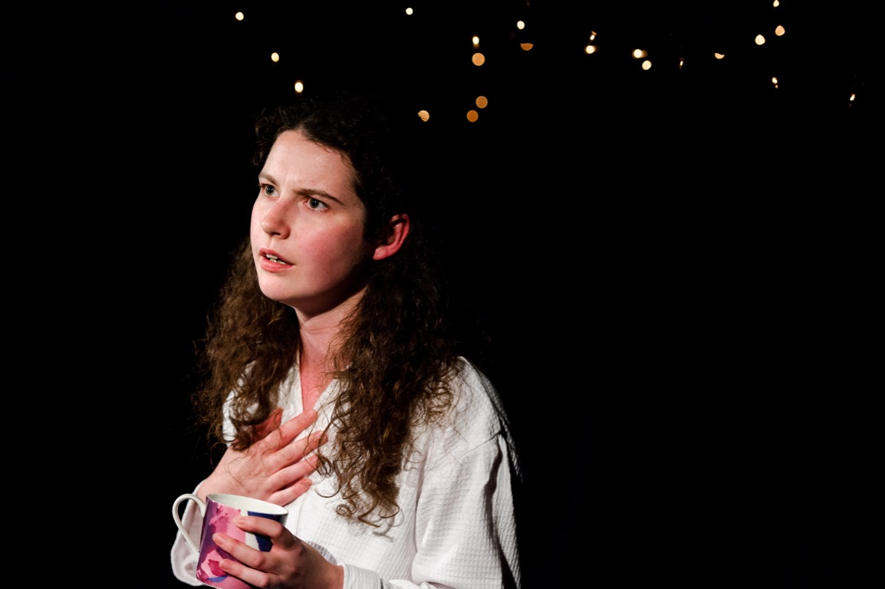
By James Fritz. Edinburgh Fringe / Battersea Arts Centre / 59E59 New York / UK Tour.
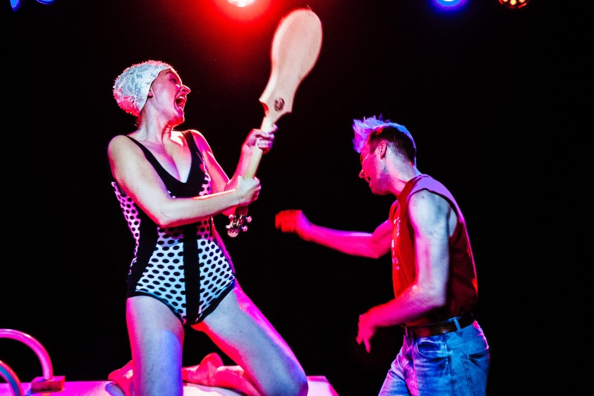
By David Elms. Edinburgh Fringe / VAULT Festival.
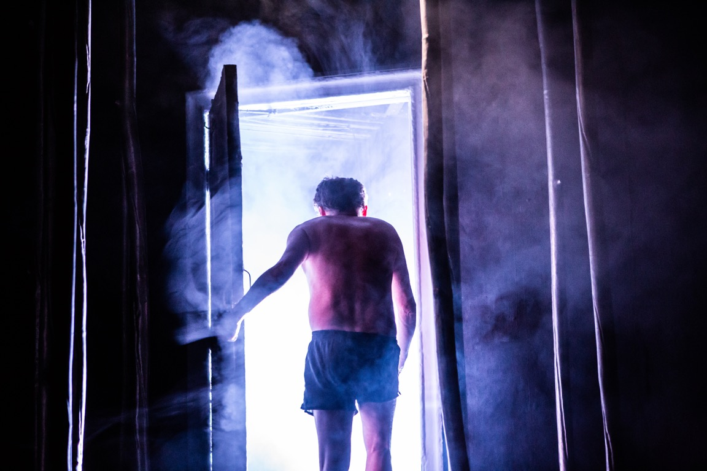
By Rachel Tooky. Old Red Lion.
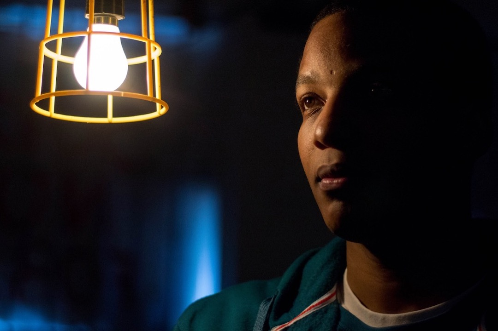
By Stewart Melton, after William Shakespeare. Southwark Playhouse.
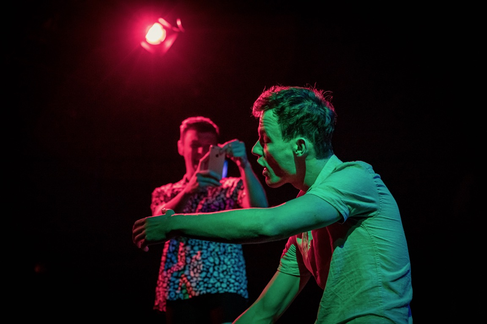
By Rhys Dunlop & Alan Mahon. New Theatre (Dublin Fringe) / VAULT Festival.
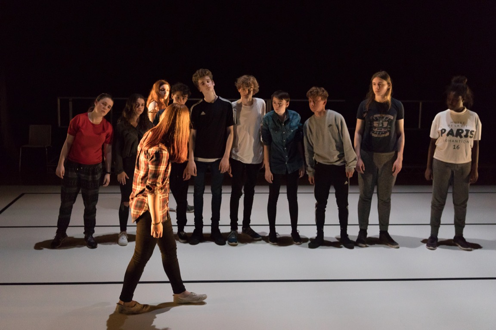
Devised with the Cambridge Junction Young Company.
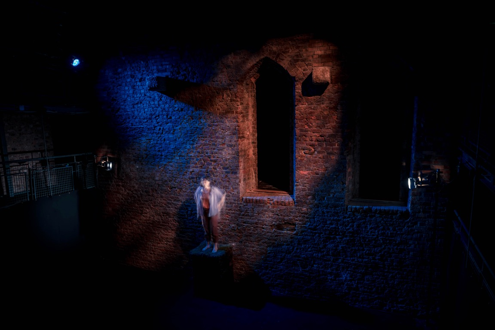
By John O'Donovan. Smock Alley Theatre (Dublin Fringe).
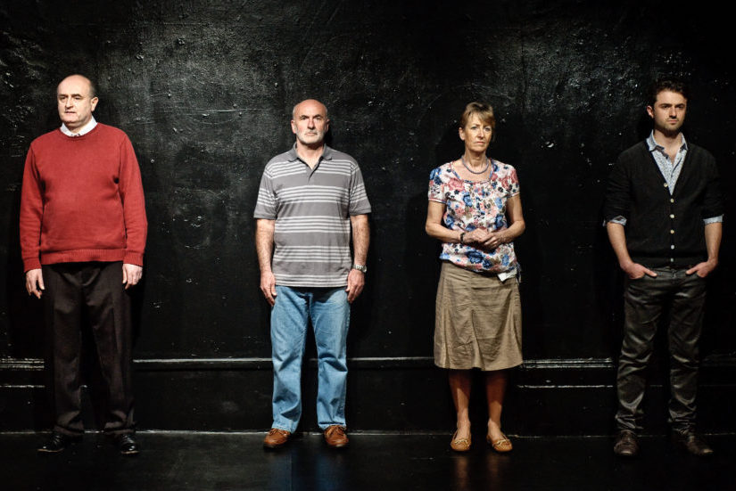
By James Fritz. Rosemary Branch Theatre.
With a track record of working on debut plays, I know the value of a well-timed note on form, structure, character or story. Ultimately, I believe writers should shoot for the moon, and love acting as the astronomer/rocket scientist/mission controller that gets them there.
I have developed work at the Royal Court, BAC and Camden People's Theatre, and directed readings for Audible and the Bush Theatre. In 2022 I ran the development process for Clive Judd's Here at the National Theatre Studio, the next draft of which won the Papatango Prize.
Between 2020 and 2022 I was Senior Reader for the Hampstead Theatre, managing the open scripts submission process there and recommending writers on for further development. I have also served on the panels for the National Theatre and the Bush.
You can hire me to provide notes on your script! This will include an introductory call to determine how developed the piece is and what you're looking to find out, detailed script notes, and some suggestions on future pathways to production.
Just shoot me an email to discuss.
I have trained actors in improvisation, Shakespearean verse, and approaches to new writing, as well as teaching university classes, directing showcases and running audition workshops. Past employers have included: Lir Academy, Year Out Drama, Richmond University, ALRA North and City University London.
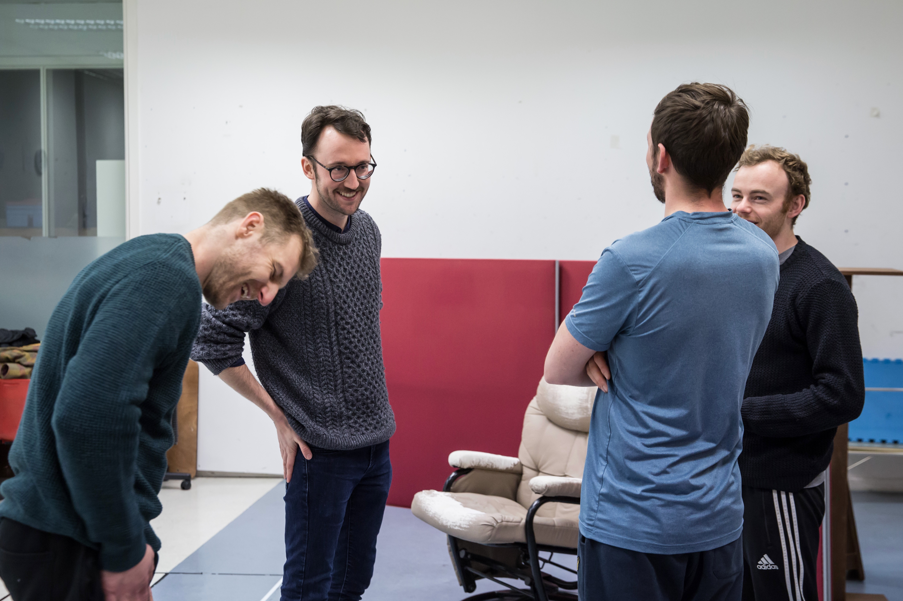
Outside of theatre contexts, I am a passionate believer in how innovative live experiences can get audiences thinking about their surroundings - and each other - in new and exciting ways. I have developed and delivered public-facing engagement projects for stakeholders including Natural History Museum, Wellcome Collection, Tate Britain and Andy Field, as well as acting as performance director on two XR education pieces for INSEAD Business School.
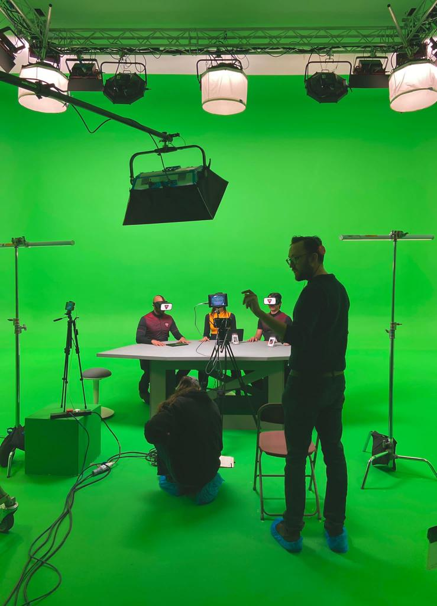
Public speaking, tropical zoology, revisionist anthropology for kids - you name it, I've run a workshop on it!
I have engaged with classrooms, workplaces and community groups for over 40 partners, including Young Vic, National Maritime Museum, and Battersea Arts Centre. If you have an educational project you'd like to talk about, do get in touch.
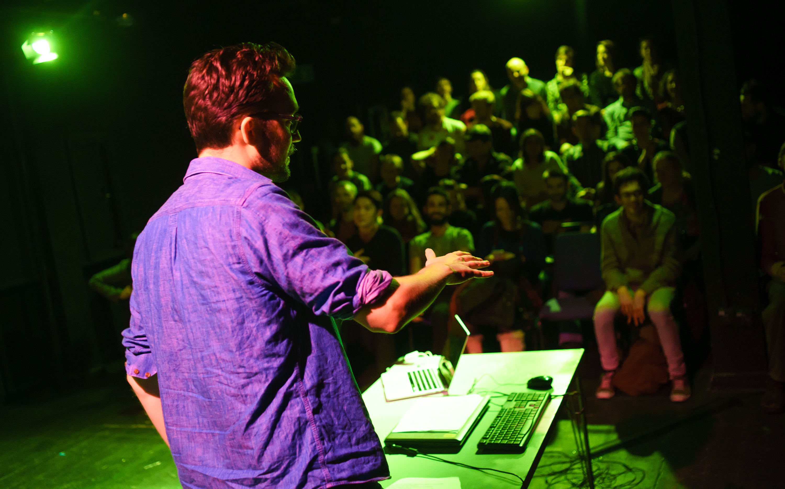
I hold an MA (Distinction) in Game Design from UAL, and taught undergraduate Game Development for five years at the University of Bedfordshire, progressing to the position of Senior Lecturer. In my time there I lead introductory prototyping workshops, multidisciplinary group projects, and units on advanced game design.
Somewhat more esoterically, for two years I led the postgraduate seminar week 'Serious Games' at the Insitute of Advanced Architecture Catalunya, working with architecture and urban planning students to translate their research and design proposals into playful experiences. I have also taught game fundamentals at the Architecture Association School of Architecture.
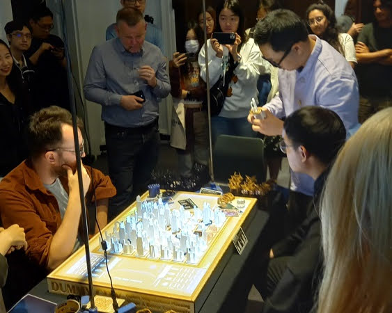
From 2013 until 2020, myself and Pat Ashe curated and produced Beta Public, London's only night of experimental theatre and video games. We presented the work of over 100 artists and game developers, curated work for the V&A's Friday Lates, and our incredible commissioned event posters featured in the exhibition Videogames: Design/Play/Disrupt.
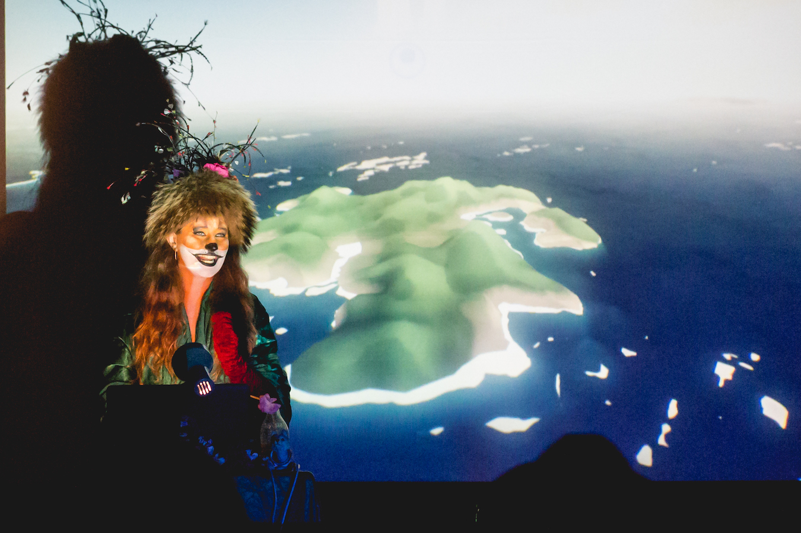